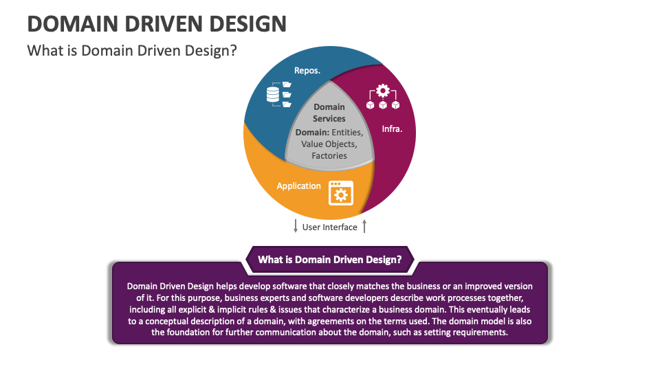

Mis on Domain-driven design?
Domain-Driven Design (DDD) on tarkvaraarendusmetoodika, mis keskendub keerukate ärisüsteemide loomisele, lähtudes äriloogikast ja domeenispetsiifilistest vajadustest. DDD ühendab tehnilise ja äripoole, et tagada, et tarkvara struktuur ja funktsionaalsus kajastavad reaalselt äri nõudeid ja protsesse. DDD keskne idee on töötada koos domeenispetsialistidega, et luua ühtne keel (ubiquitous language), mida kasutatakse nii koodi, dokumentatsiooni kui ka suhtluse alusena. See tagab, et arendajad ja äripoole esindajad mõistavad üksteist paremini.

Domain-driven design eelised ja puudused
Eelised:
- Selgem arusaam ärist: Tihe koostöö domeenispetsialistidega vähendab ärinõuete valesti tõlgendamist.
- Paindlikkus muutustega: Mudel on iteratiivne ja võimaldab hõlpsalt kohanduda ärimuutustega.
- Kood vastab äriloogikale: Kood peegeldab domeeni struktuuri ja loogikat, mis lihtsustab hooldust ja skaleerimist.
- Ühtne keel: Parandab suhtlust meeskonna ja sidusrühmade vahel.
Puudused:
- Keerukus: DDD nõuab suurt pühendumist ja õppimiskõver on järsk.
- Ajaliselt kulukas: Domeeni mõistmine ja mudeli arendamine võib alguses olla aeganõudev.
- Nõuab kogenud arendajaid: Edukas DDD rakendamine nõuab sügavaid teadmisi nii domeenist kui ka tarkvaraarhitektuurist.
Näide vahendist: EventStorming
EventStorming on tööriist ja meetod, mida kasutatakse domeeni modelleerimiseks ja ühtse keele loomiseks.
- Töövoog: Koostöö töötubade kaudu, kus tuvastatakse domeenis toimuvad sündmused ja nende mõju.
- Kasutus DDD-s: Aitab mõista äriprotsesse, tuvastada olulisi entiteete ja luua kontseptuaalne mudel.
- Paindlikkus: Võimaldab kaasata tehnilisi ja mitte-tehnilisi osapooli.